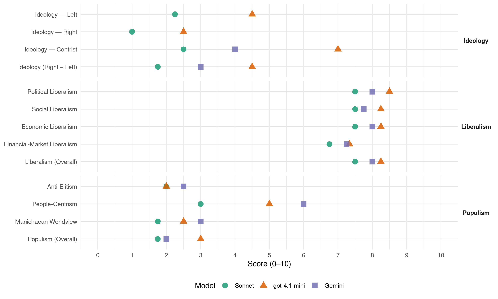

(Ireland, 2016)
manifesto_id 53520_201602
Get full text: This site shows derived annotations and short verbatim quotes only. The full manifesto text is © Manifesto Project / WZB — obtain it via manifesto-project.wzb.eu using the manifesto_id above.
Headline scores
| Dimension | Sonnet | gpt-4.1-mini | Gemini |
|---|---|---|---|
| Populism (Overall) | 1.8 | 3.0 | 2.0 |
| Anti-Elitism | 2.0 | 2.0 | 2.5 |
| People-Centrism | 3.0 | 5.0 | 6.0 |
| Manichaean Worldview | 1.8 | 2.5 | 3.0 |
| Ideology (Right − Left) | 1.8 | 4.5 | 3.0 |
| Liberalism (Overall) | 7.5 | 8.2 | 8.0 |
| Political Liberalism | 7.5 | 8.5 | 8.0 |
| Social Liberalism | 7.5 | 8.2 | 7.8 |
| Economic Liberalism | 7.5 | 8.2 | 8.0 |
| Financial-Market Liberalism | 6.8 | 7.3 | 7.2 |
Evidence per dimension
Economic Liberalism
Gemini · score 8.0 · verified · chunk 1
“projobs and pro-family country of stability”
our Long Term Economic Plan will reinforce Ireland’s position as a projobs and pro-family country of stability, growth
Gemini · score 8.0 · verified · chunk 2
“maintaining the 12.5% rate into the future”
Corporation Tax: Fine Gael defended our corporation tax regime throughout the financial crisis and we are committed to maintaining the 12.5% rate into the future.
Gemini · score 8.0 · verified · chunk 3
“We believe in the benefits of competition”
sheltered sectors of the economy. We believe in the benefits of competition. The new Competition
Gemini · score 8.0 · verified · chunk 4
“supports more choice and compet1t1on in the bus market”
benefit of passengers and supports more choice and compet1t1on in the bus market. We will support the
gpt-4.1-mini · score 8.0 · verified · chunk 1
“support both Irish-owned businesses and foreign investment”
That’s why our manifesto commits to more measures to support both Irish-owned businesses and foreign investment in this country, including: The establishment of a new €4bn “Future Jobs Investment Fund” to future-proof the economy and our jobs plan against rising global risks and challenges
gpt-4.1-mini · score 8.0 · verified · chunk 2
“Fine Gael will continue to use tax policy to add a further 200,000 jobs to the economy”
…MORE AND BETTER JOBS THROUGH EFFECTIVE TAX POLICY Fine Gael will continue to use tax policy to add a further 200,000 jobs to the economy and to bring the unemployment rate down below 6% by 2020. Corporation Tax: Fine Gael defended our corporation tax regime throughout the financial crisis and we are committed to maintaining the 12.5% rate into the future.
gpt-4.1-mini · score 8.0 · verified · chunk 3
“Fine Gael will continue to improve the tax offer to small business and reduce and ultimately eliminate the historical income tax discrepancy”
Fine Gael will continue to improve the tax offer to small business and reduce and ultimately eliminate the historical income tax discrepancy that exists between PAYE workers and the self-employed by 2018.
gpt-4.1-mini · score 9.0 · verified · chunk 4
“We will invest €3.6bn across the lifetime of the next Capital Plan to enable a number of major public transport projects to proceed”
Public Transport Investment: We will invest €3.6bn across the lifetime of the next Capital Plan to enable a number of major public transport projects to proceed, and to fund additional capacity to meet existing and future commuter needs. These will include the new Metro North and the completion of LUAS Cross City.
Sonnet · score 8.0 · verified · chunk 1
“Protecting our 12.5% rate of corporation tax”
Protecting our 12.5% rate of corporation tax and further enhancements to our corporate tax regime to encourage more investment, innovation and job creation
Sonnet · score 7.0 · verified · chunk 2
“committed to maintaining the 12.5% rate”
Fine Gael defended our corporation tax regime throughout the financial crisis and we are committed to maintaining the 12.5% rate into the future
Sonnet · score 8.0 · verified · chunk 3
“We believe in the benefits of competition”
Fine Gael stands alone as the only party prepared to shine a light on the sheltered sectors of the economy. We believe in the benefits of competition.
Sonnet · score 7.0 · verified · chunk 4
“supports more choice and competition in the bus market”
Fine Gael supports investment in our national bus market for the benefit of passengers and supports more choice and competition in the bus market.
Financial-Market Liberalism
Gemini · score 7.0 · verified · chunk 1
“disdisposing of the State’s investments in the banking sector”
We are committed to disposing of the State’s investments in the banking sector when market conditions are right
Gemini · score 8.0 · verified · chunk 2
“protect the independence of the Central Bank”
Independence of the Central Bank: We will protect the independence of the Central Bank as a guardian of financial stability.
Gemini · score 7.0 · verified · chunk 3
“increased competition from outside and within the banking sector”
Standard Variable Rates: We believe increased competition from outside and within the banking sector is the best
Gemini · score 7.0 · verified · chunk 4
“maintenance of a stable health insurance market”
Health Insurance: We will ensure the maintenance of a stable health insurance market which continues to monitor
gpt-4.1-mini · score 7.0 · verified · chunk 1
“We will continue to support the establishment of a European Banking Union”
We will continue to support the establishment of a European Banking Union with a single rulebook to ensure the Eurozone crisis we have just experienced can never happen again.
gpt-4.1-mini · score 7.0 · verified · chunk 2
“We will increase support and investment in the Revenue Commissioners to support them”
…Tax Collection and Enforcement: The Revenue Commissioners, in their Statement of Strategy 20152017, prioritise the identification and confrontation of non-compliance. In 2015, audit and compliance interventions yielded €642.5m in tax, interest and penalties. We will increase support and investment in the Revenue Commissioners to support them in this priority, with a view to improving tax enforcement by an additional €50m per year (0.1% of the tax yield).
gpt-4.1-mini · score 8.0 · verified · chunk 4
“Fine Gael set up the Irish Fiscal Advisory Council (IFAC) in 2011 to serve as an independent fiscal watchdog”
Independent Fiscal and Budget Office: Fine Gael set up the Irish Fiscal Advisory Council (IFAC) in 2011 to serve as an independent fiscal watchdog after poor budgetary management led to the crash of 2008. IFAC has emerged as a credible independent institution, fulfilling its mandate and increasing transparency on fiscal matters.
Sonnet · score 7.0 · verified · chunk 1
“more entrants and a vibrant banking sector”
Fine Gael wants to see more entrants and a vibrant banking sector with real competition in order to support the recovering economy.
Sonnet · score 7.0 · verified · chunk 2
“disposing of the State’s investments in the banking sector”
We are committed to disposing of the State’s investments in the banking sector when market conditions are right, and to recovering all the taxpayers’ money
Sonnet · score 7.0 · verified · chunk 3
“seed and venture capital, equity, and new forms”
Finance (e.g. seed and venture capital, equity, and new forms of non-bank credit)
Sonnet · score 6.0 · verified · chunk 4
“increasing transparency on fiscal matters”
IFAC has emerged as a credible independent institution, fulfilling its mandate and increasing transparency on fiscal matters.
Political Liberalism
Gemini · score 8.0 · verified · chunk 1
“protect the independence of the Central Bank”
We will protect the independence of the Central Bank as a guardian of financial stability.
Gemini · score 8.0 · verified · chunk 2
“referendum on the question of amending Article”
Offence of Blasphemy: We will hold a referendum on the question of amending Article 40.6.1(i) of the Constitution to remove the offence of blasphemy.
Gemini · score 8.0 · verified · chunk 3
“establish a new Citizens’ Assembly”
re-elected to Government, Fine Gael will, within six months, establish a new Citizens’ Assembly. This Assembly
Gemini · score 8.0 · verified · chunk 4
“reinforcing Parliament’s power to hold the Government”
accountability of the Office of the Taoiseach to the Oireachtas, reinforcing Parliament’s power to hold the Government to account. Committee Engagement
gpt-4.1-mini · score 8.0 · verified · chunk 1
“democracy, rights, elections, courts, media, government, parliament”
A verbatim quote for lib_political must mention democracy, rights, elections, courts, media, government, parliament, or a related political-institution term.
gpt-4.1-mini · score 8.0 · verified · chunk 2
“We will protect the independence of the Central Bank as a guardian of financial stability”
…Independence of the Central Bank: We will protect the independence of the Central Bank as a guardian of financial stability. We support the introduction of the recently announced “Countercyclical Capital Buffers” as a way to ensure that never again is runaway credit growth allowed to destroy our financial stability and economic prosperity.
gpt-4.1-mini · score 9.0 · verified · chunk 3
“Fine Gael will introduce automatic and new online voter registration”
Fine Gael will introduce automatic and new online voter registration for citizens once they reach 18. Electoral Commission: Fine Gael in government will establish an Electoral Commission, taking into account the Oireachtas Committee’s Report on their consultation process, published in January 2016.
gpt-4.1-mini · score 9.0 · verified · chunk 4
“Reinforcing Parliament’s power to hold the Government to account”
This will further enhance the accountability of the Office of the Taoiseach to the Oireachtas, reinforcing Parliament’s power to hold the Government to account. Committee Engagement with the Dail and the Seanad: After a Committee Report is published, time will be allocated in the Dail for the Committee Chair and members to outline the purpose of the report.
Sonnet · score 7.0 · verified · chunk 1
“independence of the Central Bank as a guardian”
We will protect the independence of the Central Bank as a guardian of financial stability.
Sonnet · score 7.0 · verified · chunk 2
“independence of the Central Bank”
We will protect the independence of the Central Bank as a guardian of financial stability
Sonnet · score 8.0 · verified · chunk 3
“independent of Government and accountable directly”
The Electoral Commission will be independent of Government and accountable directly to the Oireachtas.
Sonnet · score 8.0 · verified · chunk 4
“reinforcing Parliament’s power to hold the Government”
This will further enhance the accountability of the Office of the Taoiseach to the Oireachtas, reinforcing Parliament’s power to hold the Government to account.
Liberalism (Overall)
Gemini · score 8.0 · verified · chunk 1
“projobs and pro-family country of stability”
our Long Term Economic Plan will reinforce Ireland’s position as a projobs and pro-family country of stability, growth
Gemini · score 8.0 · verified · chunk 2
“protect the independence of the Central Bank”
Independence of the Central Bank: We will protect the independence of the Central Bank as a guardian of financial stability.
Gemini · score 8.0 · verified · chunk 3
“We believe in the benefits of competition”
sheltered sectors of the economy. We believe in the benefits of competition. The new Competition
Gemini · score 8.0 · verified · chunk 4
“reinforcing Parliament’s power to hold the Government”
accountability of the Office of the Taoiseach to the Oireachtas, reinforcing Parliament’s power to hold the Government to account. Committee Engagement
gpt-4.1-mini · score 8.0 · verified · chunk 1
“Fine Gael will continue to promote a more inclusive, diverse, fair and progressive society”
Fine Gael will continue to promote a more inclusive, diverse, fair and progressive society. As the first country in the world to vote for marriage equality, Ireland should continue to lead by example.
gpt-4.1-mini · score 8.0 · verified · chunk 2
“Fine Gael will continue to use tax policy to add a further 200,000 jobs to the economy”
…MORE AND BETTER JOBS THROUGH EFFECTIVE TAX POLICY Fine Gael will continue to use tax policy to add a further 200,000 jobs to the economy and to bring the unemployment rate down below 6% by 2020. Corporation Tax: Fine Gael defended our corporation tax regime throughout the financial crisis and we are committed to maintaining the 12.5% rate into the future.
gpt-4.1-mini · score 8.0 · verified · chunk 3
“Fine Gael will continue to improve the tax offer to small business and reduce and ultimately eliminate the historical income tax discrepancy”
Fine Gael will continue to improve the tax offer to small business and reduce and ultimately eliminate the historical income tax discrepancy that exists between PAYE workers and the self-employed by 2018.
gpt-4.1-mini · score 9.0 · verified · chunk 4
“Fine Gael set up the Irish Fiscal Advisory Council (IFAC) in 2011 to serve as an independent fiscal watchdog”
Independent Fiscal and Budget Office: Fine Gael set up the Irish Fiscal Advisory Council (IFAC) in 2011 to serve as an independent fiscal watchdog after poor budgetary management led to the crash of 2008. IFAC has emerged as a credible independent institution, fulfilling its mandate and increasing transparency on fiscal matters.
Sonnet · score 8.0 · verified · chunk 1
“pro-jobs and pro-family country of stability”
our Long Term Economic Plan will reinforce Ireland’s position as a pro-jobs and pro-family country of stability, growth and opportunity for all.
Sonnet · score 7.0 · verified · chunk 2
“committed to maintaining the 12.5% rate”
Fine Gael defended our corporation tax regime throughout the financial crisis and we are committed to maintaining the 12.5% rate into the future
Sonnet · score 8.0 · verified · chunk 3
“pro-jobs and pro-growth”
We will work with like-minded countries to ensure that the EU’s regulatory regime is pro-jobs and pro-growth.
Sonnet · score 7.0 · verified · chunk 4
“reinforcing Parliament’s power to hold the Government”
This will further enhance the accountability of the Office of the Taoiseach to the Oireachtas, reinforcing Parliament’s power to hold the Government to account.
Anti-Elitism
Gemini · score 4.0 · verified · chunk 1
“mistakes made by previous governments”
Fine Gael has learnt from the mistakes made by previous governments -we know that only
Gemini · score 1.0 · verified · chunk 2
“how populist parties in other countries have undone”
management of the economy and the public finances -we have seen how populist parties in other countries have undone all the good work, destroying confidence and stability.
Gemini · score 3.0 · verified · chunk 3
“never repeat Fianna Fail’s previous mistakes”
annual housing output, while ensuring that we never repeat Fianna Fail’s previous mistakes in this area.
Gemini · score 2.0 · verified · chunk 4
“poor budgetary management led to the crash”
independent fiscal watchdog after poor budgetary management led to the crash of2008. 1FAC has emerged
gpt-4.1-mini · score 2.0 · verified · chunk 1
“not to those who wrecked our economy in the first place”
We are determined not to let Ireland go back-not to those who wrecked our economy in the first place, and not to those who would kill jobs with new taxes on work.
gpt-4.1-mini · score 2.0 · verified · chunk 2
“populist parties in other countries have undone all the good work”
…and to keep it going requires continued vigilance in the management of the economy and the public finances -we have seen how populist parties in other countries have undone all the good work, destroying confidence and stability. Long Term Economic Plan: Fine Gael’s Long Term Economic Plan will keep the recovery going, end the cycle of boom and bust and deliver steady economic growth for the years ahead . Our plan is based on three steps: (1) more and better jobs; (2) making work pay; and (3) investing in better services.
Sonnet · score 2.0 · verified · chunk 1
“those who wrecked our economy”
We are determined not to let Ireland go back-not to those who wrecked our economy in the first place, and not to those who would kill jobs with new taxes on work.
Sonnet · score 2.0 · verified · chunk 2
“populist parties in other countries have undone”
we have seen how populist parties in other countries have undone all the good work, destroying confidence and stability
Sonnet · score 2.0 · verified · chunk 3
“Fianna Fail’s light-touch regulation”
There will be no return to Fianna Fail’s light-touch regulation which has trapped thousands of families in negative equity in substandard homes.
Sonnet · score 1.0 · mixed · chunk 4
“poor budgetary management led to the crash”
Fine Gael set up the Irish Fiscal Advisory Council (IFAC) in 2011 to serve as an independent fiscal watchdog after poor budgetary management led to the crash of 2008.
Ideology — Centrist
Gemini · score 5.0 · verified · chunk 1
“Together with the Irish people”
Together with the Irish people, Fine Gael will keep the recovery going.
Gemini · score 3.0 · verified · chunk 3
“never repeat Fianna Fail’s previous mistakes”
annual housing output, while ensuring that we never repeat Fianna Fail’s previous mistakes in this area.
gpt-4.1-mini · score 7.0 · verified · chunk 1
“Together with the Irish people, Fine Gael will keep the recovery going”
My commitment to you is to keep it that way. Together with the Irish people, Fine Gael will keep the recovery going.
gpt-4.1-mini · score 7.0 · verified · chunk 2
“Long Term Economic Plan will keep the recovery going, end the cycle of boom and bust”
…Long Term Economic Plan: Fine Gael’s Long Term Economic Plan will keep the recovery going, end the cycle of boom and bust and deliver steady economic growth for the years ahead . Our plan is based on three steps: (1) more and better jobs; (2) making work pay; and (3) investing in better services.
Sonnet · score 3.0 · verified · chunk 1
“Together with the Irish people”
Together with the Irish people, Fine Gael will keep the recovery going.
Sonnet · score 3.0 · verified · chunk 2
“Long Term Economic Plan will keep the recovery going”
Fine Gael’s Long Term Economic Plan will keep the recovery going, end the cycle of boom and bust
Sonnet · score 2.0 · verified · chunk 3
“keeping the recovery going”
As part of our Long Term Economic Plan to keep the recovery going we are committed to significantly increasing investment
Sonnet · score 2.0 · verified · chunk 4
“accountability of the Office of the Taoiseach”
This will further enhance the accountability of the Office of the Taoiseach to the Oireachtas, reinforcing Parliament’s power to hold the Government to account.
Ideology — Left
gpt-4.1-mini · score 3.0 · verified · chunk 1
“no more reckless waste of taxpayers’ money”
Fine Gael’s promise is to give our people the solid foundation on which they can build their lives -no more boom and bust, no more reckless waste of taxpayers’ money, no more sense of a CriSIS.
gpt-4.1-mini · score 6.0 · verified · chunk 2
“support people with disabilities into employment and provide bridges and supports”
…Comprehensive Employment Strategy for People with Disabilities: Work has commenced already on the implementation of this strategy. It seeks to support people with disabilities into employment and provide bridges and supports into jobs as well as offering certainty of income support if a job does not work out. It is also important that the needs of young adults with disabilities are supported at school and that they are helped to make the transition to further training or the workforce.
Sonnet · score 2.0 · verified · chunk 1
“protect the weakest and most vulnerable”
continue to invest in better services that improve people’s lives and protect the weakest and most vulnerable in our society from poverty and exclusion.
Sonnet · score 3.0 · verified · chunk 2
“levy of 5% on individual incomes over €100,000”
we will introduce a levy of 5% on individual incomes over €100,000. The levy will apply to individual incomes above €100,000
Sonnet · score 2.0 · verified · chunk 3
“social housing units by 2020”
Fine Gael will provide over 110,000 social housing units by 2020, through the delivery of 35,000 new units
Sonnet · score 2.0 · verified · chunk 4
“increase the minimum wage to €10.50”
Fine Gael will increase the minimum wage to €10.50 per hour, during a second term. lt will still be a matter for the Low Pay Commission to make annual recommendations on the level of adjustment each year.
Ideology (Right − Left)
Gemini · score 4.0 · verified · chunk 1
“Together with the Irish people”
Together with the Irish people, Fine Gael will keep the recovery going.
Gemini · score 2.0 · verified · chunk 3
“never repeat Fianna Fail’s previous mistakes”
annual housing output, while ensuring that we never repeat Fianna Fail’s previous mistakes in this area.
gpt-4.1-mini · score 4.0 · verified · chunk 1
“not to those who wrecked our economy in the first place”
We are determined not to let Ireland go back-not to those who wrecked our economy in the first place, and not to those who would kill jobs with new taxes on work.
gpt-4.1-mini · score 5.0 · verified · chunk 2
“Long Term Economic Plan will keep the recovery going, end the cycle of boom and bust”
…Long Term Economic Plan: Fine Gael’s Long Term Economic Plan will keep the recovery going, end the cycle of boom and bust and deliver steady economic growth for the years ahead . Our plan is based on three steps: (1) more and better jobs; (2) making work pay; and (3) investing in better services.
Sonnet · score 2.0 · verified · chunk 1
“those who wrecked our economy”
not to let Ireland go back-not to those who wrecked our economy in the first place, and not to those who would kill jobs with new taxes on work.
Sonnet · score 2.0 · verified · chunk 2
“populist parties in other countries have undone”
we have seen how populist parties in other countries have undone all the good work, destroying confidence and stability
Sonnet · score 2.0 · verified · chunk 3
“Fine Gael is a pro-enterprise party”
Fine Gael is a pro-enterprise party and we firmly believe that entrepreneurs are the lifeblood of the economy.
Sonnet · score 1.0 · verified · chunk 4
“recovery is felt inside every doorstep”
Fine Gael will continue to put in place measures to revitalise rural Ireland during a second term of government so that the recovery is felt inside every doorstep, in every community, in Ireland.
Ideology — Right
gpt-4.1-mini · score 2.0 · verified · chunk 1
“bring home at least 70,000 of our friends and family forced to leave”
By keeping the recovery going, the aim of our Plan is that by 2022-the l00th anniversary of the foundation of the State-Ireland will be a country which: … Has brought home at least 70,000 of our friends and family forced to leave because of the CriSIS
gpt-4.1-mini · score 3.0 · verified · chunk 2
“We will increase the level of female participation, with the goal of doubling the rate”
…Women in the Defence Forces: Recognising the very strong contribution made by female personnel, we will prioritise the need to address the gap in female participation in the Defence Forces. Fine Gael will increase the level of female participation, with the goal of doubling the rate of participation from the current 6% to 12% in the next 5 years. We will ensure future UN peacekeeping missions incorporate a number of gender-focused measures and the work of the Peace and Leadership Institute provides an opportunity for the development of expertise in these areas.
Sonnet · score 1.0 · verified · chunk 1
“Protecting our 12.5% rate of corporation tax”
Protecting our 12.5% rate of corporation tax and further enhancements to our corporate tax regime to encourage more investment, innovation and job creation
Sonnet · score 1.0 · verified · chunk 2
“job creation in the Gaeltacht”
we will continue to focus on job creation in the Gaeltacht, through Udaras na Gaeltachta
Sonnet · score 1.0 · verified · chunk 3
“tough approach to tackling illegal migration”
balanced migration policy that supports our economy and meets our international and humanitarian obligations, whilst also taking a tough approach to tackling illegal migration.
Manichaean Worldview
Gemini · score 3.0 · verified · chunk 1
“those who wrecked our economy”
not to let Ireland go back-not to those who wrecked our economy in the first place
gpt-4.1-mini · score 3.0 · verified · chunk 1
“not to those who wrecked our economy in the first place”
We are determined not to let Ireland go back-not to those who wrecked our economy in the first place, and not to those who would kill jobs with new taxes on work.
gpt-4.1-mini · score 2.0 · verified · chunk 2
“destroying confidence and stability”
…populist parties in other countries have undone all the good work, destroying confidence and stability. Long Term Economic Plan: Fine Gael’s Long Term Economic Plan will keep the recovery going, end the cycle of boom and bust and deliver steady economic growth for the years ahead . Our plan is based on three steps: (1) more and better jobs; (2) making work pay; and (3) investing in better services.
Sonnet · score 2.0 · verified · chunk 1
“those who wrecked our economy in the first place”
not to let Ireland go back-not to those who wrecked our economy in the first place, and not to those who would kill jobs with new taxes on work.
Sonnet · score 2.0 · verified · chunk 2
“never again repeat Fianna Fail’s mistake”
will ensure that we never again repeat Fianna Fail’s mistake of using temporary periods of strong growth to make reckless spending commitments
Sonnet · score 2.0 · verified · chunk 3
“worst legacies of Fianna Fail’s time”
One of the worst legacies of Fianna Fail’s time in government was the huge number of unfinished or ‘ghost’ estates
Sonnet · score 1.0 · verified · chunk 4
“economic crisis we inherited from Fianna Fail”
Despite the economic crisis we inherited from Fianna Fail, Fine Gael prioritised our children’s welfare, by creating the first dedicated Cabinet Minister for Children and Youth Affairs
People-Centrism
Gemini · score 6.0 · verified · chunk 1
“resilience of the Irish people”
Thanks to the hard work and resilience of the Irish people, our economy is now recovering.
gpt-4.1-mini · score 7.0 · verified · chunk 1
“our people can once again prosper, work, start a business”
Thanks to the hard work and resilience of the Irish people, our economy is now recovering. While the economic recovery remains fragile and cannot be taken for granted, we now have it in our grasp to make Ireland a country where our people can once again prosper, work, start a business, raise a family and grow old with dignity.
gpt-4.1-mini · score 3.0 · verified · chunk 2
“More and Better Jobs: Unemployment is the greatest source of unfairness in society”
…The three pillars of this are: More and Better Jobs: Unemployment is the greatest source of unfairness in society, with its economic, social and health effects. Long Term Thinking for Better Services: Only a sustainable economy can deliver the resources needed to provide public services which enable and protect our citizens, especially the most vulnerable. Equality of Opportunity: Specific policies are needed alongside a strong economy to ensure that everyone has a fair and equal opportunity to participate in society, regardless of their circumstances.
Sonnet · score 4.0 · verified · chunk 1
“hard work and resilience of the Irish people”
Thanks to the hard work and resilience of the Irish people, our economy is now recovering.
Sonnet · score 3.0 · verified · chunk 2
“no child is left behind in economic recovery”
Fine Gael’s ambition is that no child is left behind in economic recovery and that we use the benefits of a strong economy
Sonnet · score 3.0 · verified · chunk 3
“dreams and aspirations of families”
Fine Gael supports the dreams and aspirations of families to own their own home.
Sonnet · score 2.0 · verified · chunk 4
“recovery is felt inside every doorstep”
Fine Gael will continue to put in place measures to revitalise rural Ireland during a second term of government so that the recovery is felt inside every doorstep, in every community, in Ireland.
Populism (Overall)
Gemini · score 4.0 · verified · chunk 1
“resilience of the Irish people”
Thanks to the hard work and resilience of the Irish people, our economy is now recovering.
Gemini · score 1.0 · verified · chunk 2
“how populist parties in other countries have undone”
management of the economy and the public finances -we have seen how populist parties in other countries have undone all the good work, destroying confidence and stability.
Gemini · score 2.0 · verified · chunk 3
“never repeat Fianna Fail’s previous mistakes”
annual housing output, while ensuring that we never repeat Fianna Fail’s previous mistakes in this area.
Gemini · score 1.0 · verified · chunk 4
“poor budgetary management led to the crash”
independent fiscal watchdog after poor budgetary management led to the crash of2008. 1FAC has emerged
gpt-4.1-mini · score 4.0 · verified · chunk 1
“not to those who wrecked our economy in the first place”
We are determined not to let Ireland go back-not to those who wrecked our economy in the first place, and not to those who would kill jobs with new taxes on work.
gpt-4.1-mini · score 2.0 · verified · chunk 2
“populist parties in other countries have undone all the good work”
…and to keep it going requires continued vigilance in the management of the economy and the public finances -we have seen how populist parties in other countries have undone all the good work, destroying confidence and stability. Long Term Economic Plan: Fine Gael’s Long Term Economic Plan will keep the recovery going, end the cycle of boom and bust and deliver steady economic growth for the years ahead . Our plan is based on three steps: (1) more and better jobs; (2) making work pay; and (3) investing in better services.
Sonnet · score 2.0 · verified · chunk 1
“those who wrecked our economy”
We are determined not to let Ireland go back-not to those who wrecked our economy in the first place, and not to those who would kill jobs with new taxes on work.
Sonnet · score 2.0 · verified · chunk 2
“populist parties in other countries have undone”
we have seen how populist parties in other countries have undone all the good work, destroying confidence and stability
Sonnet · score 2.0 · verified · chunk 3
“Fianna Fail’s previous mistakes in this area”
we will support a sustainable increase in the annual housing output, while ensuring that we never repeat Fianna Fail’s previous mistakes in this area.
Sonnet · score 1.0 · verified · chunk 4
“economic crisis we inherited from Fianna Fail”
Despite the economic crisis we inherited from Fianna Fail, Fine Gael prioritised our children’s welfare, by creating the first dedicated Cabinet Minister for Children and Youth Affairs
Social Liberalism